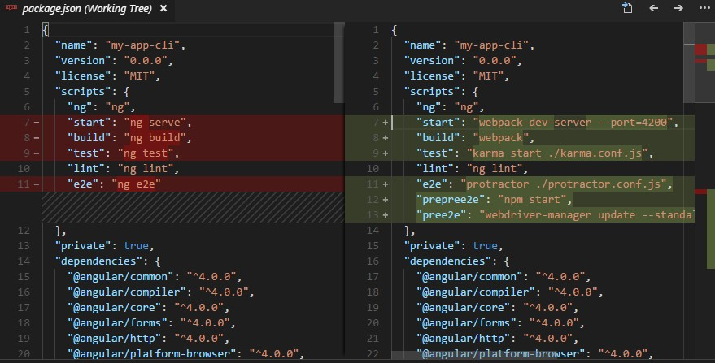

[Angular] Angular CLI 實用小技巧 3
- 建置專案與環境參數設定
Build 與 Environment
build 可將 Angular 專案打包，之後可以佈署到 server 上，而 environment 是用來設定一些 Angular 會用到的參數，例如: 開發時的 host 是 http://dev/ ， production host 是 http://prod/ ，就可以將參數寫在 environment.ts。
比較 Dev Build 與 Prod Build:
| 說明 | ng build | ng build --prod |
|---|---|---|
| 使用的 Environment 檔案 | environment.ts | environment.prod.ts |
| 不要讓檔案被 Cache (Cache-busting) | 只有 css 檔案參考到的圖檔 | 所有檔案 |
| Source maps | 建立 | 不建立 |
| Extracted CSS | global CSS output to .js | yes, to css files |
| 醜化 (Uglification) | 無 | 有 |
| 移除沒用到的程式碼 (Tree-Shaking) | 無 | 有 |
| Ahead of time compilation AOT | 無 | 有 |
| Bundling | 有 | 有 |
dev ng build 參數設定小技巧
這四行執行結果都一樣
prod ng build 參數設定小技巧
這三行執行結果都一樣
ng build 其他參數設定
| 參數 | 別名 | 說明 |
|---|---|---|
| --sourcemap | -sm | 建立 source map |
| --aot | Ahead of Time compilation | |
| --watch | -w | 監控程式碼變成，並重新 build |
輸出 Build Bundles 說明
專案 build 之後，會將專案用到的 js bundle 起來，每一個 bundle js 都有自己的職責。
| js 檔案 | 說明 |
|---|---|
| inline.bundle.js | WebPack runtime，應用程式拿來用來讀取 module 用 |
| main.bundle.js | 我們寫的程式碼 |
| polyfills.bundle.js | 用來支援不同的瀏覽器 |
| styles.bundle.js | 紀錄 styles 被放在哪裡 |
| vendor.bundle.js | 包含 Angular 和其他 third-party 檔案 |
啟動 webpack-dev-server
設定參數說明:
| 參數 | 別名 | 說明 |
|---|---|---|
| --open | -o | ng serve 後，開啟網頁 |
| --port | -p | 指定 port 號 |
| --live-reload | -lr | 檔案發生變更後，是否直接重新整理瀏覽器 (-lr true or false) |
| --ssl | 使用 https | |
| --proxy-config | -pc | Proxy configuration file |
| --prod | 啟動時 server，使用 --prod 的設定 |
停掉 Angular CLI ， 使用 webpack 控制專案
這個功能可讓懂前端開發工具的人，能夠有更多靈活的應用。
執行指令後 Angular CLI 的功能都將會無法使用，例如
ng build, ng serve 等等…。
webpack.config.js會被加入專案中，必且可以比較 package.json 改變的內容，會看到所有控制都交由原生的前端工具來執行。
package


{kind=link}
{kind=link}
{kind=link}